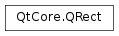

QRect¶
Synopsis¶
Functions¶
- def
__add__(, margins) - def
__add__(margins) - def
__and__(r) - def
__eq__(, arg__2) - def
__eq__(, r2) - def
__iadd__(margins) - def
__iand__(r) - def
__ior__(r) - def
__isub__(margins) - def
__ne__(, arg__2) - def
__ne__(, r2) - def
__or__(r) - def
__reduce__() - def
__repr__() - def
__sub__(, rhs) - def
adjust(x1, y1, x2, y2) - def
adjusted(x1, y1, x2, y2) - def
bottom() - def
bottomLeft() - def
bottomRight() - def
center() - def
contains(p[, proper=false]) - def
contains(r[, proper=false]) - def
contains(x, y) - def
contains(x, y, proper) - def
getCoords() - def
getRect() - def
height() - def
intersected(other) - def
intersects(r) - def
isEmpty() - def
isNull() - def
isValid() - def
left() - def
marginsAdded(margins) - def
marginsRemoved(margins) - def
moveBottom(pos) - def
moveBottomLeft(p) - def
moveBottomRight(p) - def
moveCenter(p) - def
moveLeft(pos) - def
moveRight(pos) - def
moveTo(p) - def
moveTo(x, t) - def
moveTop(pos) - def
moveTopLeft(p) - def
moveTopRight(p) - def
normalized() - def
right() - def
setBottom(pos) - def
setBottomLeft(p) - def
setBottomRight(p) - def
setCoords(x1, y1, x2, y2) - def
setHeight(h) - def
setLeft(pos) - def
setRect(x, y, w, h) - def
setRight(pos) - def
setSize(s) - def
setTop(pos) - def
setTopLeft(p) - def
setTopRight(p) - def
setWidth(w) - def
setX(x) - def
setY(y) - def
size() - def
top() - def
topLeft() - def
topRight() - def
translate(dx, dy) - def
translate(p) - def
translated(dx, dy) - def
translated(p) - def
transposed() - def
united(other) - def
width() - def
x() - def
y()
Detailed Description¶
The
PySide2.QtCore.QRectclass defines a rectangle in the plane using integer precision.A rectangle is normally expressed as a top-left corner and a size. The size (width and height) of a
PySide2.QtCore.QRectis always equivalent to the mathematical rectangle that forms the basis for its rendering.A
PySide2.QtCore.QRectcan be constructed with a set of left, top, width and height integers, or from aPySide2.QtCore.QPointand aPySide2.QtCore.QSize. The following code creates two identical rectangles.r1 = QRect(100, 200, 11, 16) r2 = QRect(QPoint(100, 200), QSize(11, 16))There is a third constructor that creates a
PySide2.QtCore.QRectusing the top-left and bottom-right coordinates, but we recommend that you avoid using it. The rationale is that for historical reasons the values returned by thePySide2.QtCore.QRect.bottom()andPySide2.QtCore.QRect.right()functions deviate from the true bottom-right corner of the rectangle.The
PySide2.QtCore.QRectclass provides a collection of functions that return the various rectangle coordinates, and enable manipulation of these.PySide2.QtCore.QRectalso provide functions to move the rectangle relative to the various coordinates. In addition there is aPySide2.QtCore.QRect.moveTo()function that moves the rectangle, leaving its top left corner at the given coordinates. Alternatively, thePySide2.QtCore.QRect.translate()function moves the rectangle the given offset relative to the current position, and thePySide2.QtCore.QRect.translated()function returns a translated copy of this rectangle.The
PySide2.QtCore.QRect.size()function returns the rectange’s dimensions as aPySide2.QtCore.QSize. The dimensions can also be retrieved separately using thePySide2.QtCore.QRect.width()andPySide2.QtCore.QRect.height()functions. To manipulate the dimensions use thePySide2.QtCore.QRect.setSize(),PySide2.QtCore.QRect.setWidth()orPySide2.QtCore.QRect.setHeight()functions. Alternatively, the size can be changed by applying either of the functions setting the rectangle coordinates, for example,PySide2.QtCore.QRect.setBottom()orPySide2.QtCore.QRect.setRight().The
PySide2.QtCore.QRect.contains()function tells whether a given point is inside the rectangle or not, and thePySide2.QtCore.QRect.intersects()function returnstrueif this rectangle intersects with a given rectangle. ThePySide2.QtCore.QRectclass also provides thePySide2.QtCore.QRect.intersected()function which returns the intersection rectangle, and thePySide2.QtCore.QRect.united()function which returns the rectangle that encloses the given rectangle and this:
PySide2.QtCore.QRect.intersected()PySide2.QtCore.QRect.united()The
PySide2.QtCore.QRect.isEmpty()function returnstrueifPySide2.QtCore.QRect.left()>PySide2.QtCore.QRect.right()orPySide2.QtCore.QRect.top()>PySide2.QtCore.QRect.bottom(). Note that an empty rectangle is not valid: ThePySide2.QtCore.QRect.isValid()function returnstrueifPySide2.QtCore.QRect.left()<=PySide2.QtCore.QRect.right()andPySide2.QtCore.QRect.top()<=PySide2.QtCore.QRect.bottom(). A null rectangle (PySide2.QtCore.QRect.isNull()== true) on the other hand, has both width and height set to 0.Note that due to the way
PySide2.QtCore.QRectandPySide2.QtCore.QRectFare defined, an emptyPySide2.QtCore.QRectis defined in essentially the same way asPySide2.QtCore.QRectF.Finally,
PySide2.QtCore.QRectobjects can be streamed as well as compared.
Rendering¶
When using an
anti-aliasedpainter, the boundary line of aPySide2.QtCore.QRectwill be rendered symmetrically on both sides of the mathematical rectangle’s boundary line. But when using an aliased painter (the default) other rules apply.Then, when rendering with a one pixel wide pen the
PySide2.QtCore.QRect‘s boundary line will be rendered to the right and below the mathematical rectangle’s boundary line.When rendering with a two pixels wide pen the boundary line will be split in the middle by the mathematical rectangle. This will be the case whenever the pen is set to an even number of pixels, while rendering with a pen with an odd number of pixels, the spare pixel will be rendered to the right and below the mathematical rectangle as in the one pixel case.
Logical representation One pixel wide pen Two pixel wide pen Three pixel wide pen


Coordinates¶
The
PySide2.QtCore.QRectclass provides a collection of functions that return the various rectangle coordinates, and enable manipulation of these.PySide2.QtCore.QRectalso provide functions to move the rectangle relative to the various coordinates.For example the
PySide2.QtCore.QRect.left(),PySide2.QtCore.QRect.setLeft()andPySide2.QtCore.QRect.moveLeft()functions as an example:PySide2.QtCore.QRect.left()returns the x-coordinate of the rectangle’s left edge,PySide2.QtCore.QRect.setLeft()sets the left edge of the rectangle to the given x coordinate (it may change the width, but will never change the rectangle’s right edge) andPySide2.QtCore.QRect.moveLeft()moves the entire rectangle horizontally, leaving the rectangle’s left edge at the given x coordinate and its size unchanged.
Note that for historical reasons the values returned by the
PySide2.QtCore.QRect.bottom()andPySide2.QtCore.QRect.right()functions deviate from the true bottom-right corner of the rectangle: ThePySide2.QtCore.QRect.right()function returns **PySide2.QtCore.QRect.left()+PySide2.QtCore.QRect.width()- 1 and thePySide2.QtCore.QRect.bottom()function returns **PySide2.QtCore.QRect.top()+PySide2.QtCore.QRect.height()- 1 . The same is the case for the point returned by thePySide2.QtCore.QRect.bottomRight()convenience function. In addition, the x and y coordinate of thePySide2.QtCore.QRect.topRight()andPySide2.QtCore.QRect.bottomLeft()functions, respectively, contain the same deviation from the true right and bottom edges.We recommend that you use
PySide2.QtCore.QRect.x()+PySide2.QtCore.QRect.width()andPySide2.QtCore.QRect.y()+PySide2.QtCore.QRect.height()to find the true bottom-right corner, and avoidPySide2.QtCore.QRect.right()andPySide2.QtCore.QRect.bottom(). Another solution is to usePySide2.QtCore.QRectF: ThePySide2.QtCore.QRectFclass defines a rectangle in the plane using floating point accuracy for coordinates, and theQRectF.right()andQRectF.bottom()functions do return the right and bottom coordinates.It is also possible to add offsets to this rectangle’s coordinates using the
PySide2.QtCore.QRect.adjust()function, as well as retrieve a new rectangle based on adjustments of the original one using thePySide2.QtCore.QRect.adjusted()function. If either of the width and height is negative, use thePySide2.QtCore.QRect.normalized()function to retrieve a rectangle where the corners are swapped.In addition,
PySide2.QtCore.QRectprovides thePySide2.QtCore.QRect.getCoords()function which extracts the position of the rectangle’s top-left and bottom-right corner, and thePySide2.QtCore.QRect.getRect()function which extracts the rectangle’s top-left corner, width and height. Use thePySide2.QtCore.QRect.setCoords()andPySide2.QtCore.QRect.setRect()function to manipulate the rectangle’s coordinates and dimensions in one go.
Constraints¶
PySide2.QtCore.QRectis limited to the minimum and maximum values for theinttype. Operations on aPySide2.QtCore.QRectthat could potentially result in values outside this range will result in undefined behavior.
-
class
PySide2.QtCore.QRect¶ -
class
PySide2.QtCore.QRect(topleft, bottomright) -
class
PySide2.QtCore.QRect(topleft, size) -
class
PySide2.QtCore.QRect(QRect) -
class
PySide2.QtCore.QRect(left, top, width, height) Parameters: - height –
PySide2.QtCore.int - size –
PySide2.QtCore.QSize - left –
PySide2.QtCore.int - bottomright –
PySide2.QtCore.QPoint - width –
PySide2.QtCore.int - QRect –
PySide2.QtCore.QRect - topleft –
PySide2.QtCore.QPoint - top –
PySide2.QtCore.int
Constructs a null rectangle.
See also
Constructs a rectangle with the given
topLeftandbottomRightcorners.Constructs a rectangle with the given
topLeftcorner and the givensize.Constructs a rectangle with (
x,y) as its top-left corner and the givenwidthandheight.See also
- height –
-
PySide2.QtCore.QRect.__reduce__()¶ Return type: PyObject
-
PySide2.QtCore.QRect.__repr__()¶ Return type: PyObject
-
PySide2.QtCore.QRect.adjust(x1, y1, x2, y2)¶ Parameters: - x1 –
PySide2.QtCore.int - y1 –
PySide2.QtCore.int - x2 –
PySide2.QtCore.int - y2 –
PySide2.QtCore.int
Adds
dx1,dy1,dx2anddy2respectively to the existing coordinates of the rectangle.- x1 –
-
PySide2.QtCore.QRect.adjusted(x1, y1, x2, y2)¶ Parameters: - x1 –
PySide2.QtCore.int - y1 –
PySide2.QtCore.int - x2 –
PySide2.QtCore.int - y2 –
PySide2.QtCore.int
Return type: Returns a new rectangle with
dx1,dy1,dx2anddy2added respectively to the existing coordinates of this rectangle.See also
- x1 –
-
PySide2.QtCore.QRect.bottom()¶ Return type: PySide2.QtCore.intReturns the y-coordinate of the rectangle’s bottom edge.
Note that for historical reasons this function returns
PySide2.QtCore.QRect.top()+PySide2.QtCore.QRect.height()- 1; usePySide2.QtCore.QRect.y()+PySide2.QtCore.QRect.height()to retrieve the true y-coordinate.
-
PySide2.QtCore.QRect.bottomLeft()¶ Return type: PySide2.QtCore.QPointReturns the position of the rectangle’s bottom-left corner. Note that for historical reasons this function returns
PySide2.QtCore.QPoint(PySide2.QtCore.QRect.left(),PySide2.QtCore.QRect.top()+PySide2.QtCore.QRect.height()- 1).
-
PySide2.QtCore.QRect.bottomRight()¶ Return type: PySide2.QtCore.QPointReturns the position of the rectangle’s bottom-right corner.
Note that for historical reasons this function returns
PySide2.QtCore.QPoint(PySide2.QtCore.QRect.left()+PySide2.QtCore.QRect.width()-1,PySide2.QtCore.QRect.top()+PySide2.QtCore.QRect.height()- 1).
-
PySide2.QtCore.QRect.center()¶ Return type: PySide2.QtCore.QPointReturns the center point of the rectangle.
See also
-
PySide2.QtCore.QRect.contains(x, y, proper)¶ Parameters: - x –
PySide2.QtCore.int - y –
PySide2.QtCore.int - proper –
PySide2.QtCore.bool
Return type: PySide2.QtCore.boolThis is an overloaded function.
Returns
trueif the point (x,y) is inside or on the edge of the rectangle, otherwise returnsfalse. Ifproperis true, this function only returnstrueif the point is entirely inside the rectangle(not on the edge).- x –
-
PySide2.QtCore.QRect.contains(x, y) Parameters: - x –
PySide2.QtCore.int - y –
PySide2.QtCore.int
Return type: PySide2.QtCore.boolThis is an overloaded function.
Returns
trueif the point (x,y) is inside this rectangle, otherwise returnsfalse.- x –
-
PySide2.QtCore.QRect.contains(r[, proper=false]) Parameters: - r –
PySide2.QtCore.QRect - proper –
PySide2.QtCore.bool
Return type: PySide2.QtCore.boolThis is an overloaded function.
Returns
trueif the givenrectangleis inside this rectangle. otherwise returnsfalse. Ifproperis true, this function only returnstrueif therectangleis entirely inside this rectangle (not on the edge).- r –
-
PySide2.QtCore.QRect.contains(p[, proper=false]) Parameters: - p –
PySide2.QtCore.QPoint - proper –
PySide2.QtCore.bool
Return type: PySide2.QtCore.boolReturns
trueif the givenpointis inside or on the edge of the rectangle, otherwise returnsfalse. Ifproperis true, this function only returnstrueif the givenpointis inside the rectangle (i.e., not on the edge).See also
- p –
-
PySide2.QtCore.QRect.getCoords()¶ Extracts the position of the rectangle’s top-left corner to *``x1`` and *``y1`` , and the position of the bottom-right corner to *``x2`` and *``y2`` .
-
PySide2.QtCore.QRect.getRect()¶ Extracts the position of the rectangle’s top-left corner to *``x`` and *``y`` , and its dimensions to *``width`` and *``height`` .
-
PySide2.QtCore.QRect.height()¶ Return type: PySide2.QtCore.intReturns the height of the rectangle.
-
PySide2.QtCore.QRect.intersected(other)¶ Parameters: other – PySide2.QtCore.QRectReturn type: PySide2.QtCore.QRectReturns the intersection of this rectangle and the given
rectangle. Note thatr.intersected(s)is equivalent tor & s.
See also
PySide2.QtCore.QRect.intersects()PySide2.QtCore.QRect.united()PySide2.QtCore.QRect.operator&=()
-
PySide2.QtCore.QRect.intersects(r)¶ Parameters: r – PySide2.QtCore.QRectReturn type: PySide2.QtCore.boolReturns
trueif this rectangle intersects with the givenrectangle(i.e., there is at least one pixel that is within both rectangles), otherwise returnsfalse.The intersection rectangle can be retrieved using the
PySide2.QtCore.QRect.intersected()function.See also
-
PySide2.QtCore.QRect.isEmpty()¶ Return type: PySide2.QtCore.boolReturns
trueif the rectangle is empty, otherwise returnsfalse.An empty rectangle has a
PySide2.QtCore.QRect.left()>PySide2.QtCore.QRect.right()orPySide2.QtCore.QRect.top()>PySide2.QtCore.QRect.bottom(). An empty rectangle is not valid (i.e., == !PySide2.QtCore.QRect.isValid()).Use the
PySide2.QtCore.QRect.normalized()function to retrieve a rectangle where the corners are swapped.
-
PySide2.QtCore.QRect.isNull()¶ Return type: PySide2.QtCore.boolReturns
trueif the rectangle is a null rectangle, otherwise returnsfalse.A null rectangle has both the width and the height set to 0 (i.e.,
PySide2.QtCore.QRect.right()==PySide2.QtCore.QRect.left()- 1 andPySide2.QtCore.QRect.bottom()==PySide2.QtCore.QRect.top()- 1). A null rectangle is also empty, and hence is not valid.
-
PySide2.QtCore.QRect.isValid()¶ Return type: PySide2.QtCore.boolReturns
trueif the rectangle is valid, otherwise returnsfalse.A valid rectangle has a
PySide2.QtCore.QRect.left()<=PySide2.QtCore.QRect.right()andPySide2.QtCore.QRect.top()<=PySide2.QtCore.QRect.bottom(). Note that non-trivial operations like intersections are not defined for invalid rectangles. A valid rectangle is not empty (i.e., == !PySide2.QtCore.QRect.isEmpty()).
-
PySide2.QtCore.QRect.left()¶ Return type: PySide2.QtCore.intReturns the x-coordinate of the rectangle’s left edge. Equivalent to
PySide2.QtCore.QRect.x().
-
PySide2.QtCore.QRect.marginsAdded(margins)¶ Parameters: margins – PySide2.QtCore.QMarginsReturn type: PySide2.QtCore.QRectReturns a rectangle grown by the
margins.See also
PySide2.QtCore.QRect.operator+=()PySide2.QtCore.QRect.marginsRemoved()PySide2.QtCore.QRect.operator-=()
-
PySide2.QtCore.QRect.marginsRemoved(margins)¶ Parameters: margins – PySide2.QtCore.QMarginsReturn type: PySide2.QtCore.QRectRemoves the
marginsfrom the rectangle, shrinking it.See also
PySide2.QtCore.QRect.marginsAdded()PySide2.QtCore.QRect.operator+=()PySide2.QtCore.QRect.operator-=()
-
PySide2.QtCore.QRect.moveBottom(pos)¶ Parameters: pos – PySide2.QtCore.intMoves the rectangle vertically, leaving the rectangle’s bottom edge at the given
ycoordinate. The rectangle’s size is unchanged.
-
PySide2.QtCore.QRect.moveBottomLeft(p)¶ Parameters: p – PySide2.QtCore.QPointMoves the rectangle, leaving the bottom-left corner at the given
position. The rectangle’s size is unchanged.
-
PySide2.QtCore.QRect.moveBottomRight(p)¶ Parameters: p – PySide2.QtCore.QPointMoves the rectangle, leaving the bottom-right corner at the given
position. The rectangle’s size is unchanged.
-
PySide2.QtCore.QRect.moveCenter(p)¶ Parameters: p – PySide2.QtCore.QPointMoves the rectangle, leaving the center point at the given
position. The rectangle’s size is unchanged.See also
-
PySide2.QtCore.QRect.moveLeft(pos)¶ Parameters: pos – PySide2.QtCore.intMoves the rectangle horizontally, leaving the rectangle’s left edge at the given
xcoordinate. The rectangle’s size is unchanged.
-
PySide2.QtCore.QRect.moveRight(pos)¶ Parameters: pos – PySide2.QtCore.intMoves the rectangle horizontally, leaving the rectangle’s right edge at the given
xcoordinate. The rectangle’s size is unchanged.
-
PySide2.QtCore.QRect.moveTo(x, t)¶ Parameters: - x –
PySide2.QtCore.int - t –
PySide2.QtCore.int
Moves the rectangle, leaving the top-left corner at the given position (
x,y). The rectangle’s size is unchanged.- x –
-
PySide2.QtCore.QRect.moveTo(p) Parameters: p – PySide2.QtCore.QPointMoves the rectangle, leaving the top-left corner at the given
position.
-
PySide2.QtCore.QRect.moveTop(pos)¶ Parameters: pos – PySide2.QtCore.intMoves the rectangle vertically, leaving the rectangle’s top edge at the given
ycoordinate. The rectangle’s size is unchanged.
-
PySide2.QtCore.QRect.moveTopLeft(p)¶ Parameters: p – PySide2.QtCore.QPointMoves the rectangle, leaving the top-left corner at the given
position. The rectangle’s size is unchanged.
-
PySide2.QtCore.QRect.moveTopRight(p)¶ Parameters: p – PySide2.QtCore.QPointMoves the rectangle, leaving the top-right corner at the given
position. The rectangle’s size is unchanged.
-
PySide2.QtCore.QRect.normalized()¶ Return type: PySide2.QtCore.QRectReturns a normalized rectangle; i.e., a rectangle that has a non-negative width and height.
If
PySide2.QtCore.QRect.width()< 0 the function swaps the left and right corners, and it swaps the top and bottom corners ifPySide2.QtCore.QRect.height()< 0.
-
PySide2.QtCore.QRect.__ne__(r2)¶ Parameters: r2 – PySide2.QtCore.QRectReturn type: PySide2.QtCore.bool
-
PySide2.QtCore.QRect.__ne__(arg__2) Parameters: arg__2 – PySide2.QtCore.QRectReturn type: PySide2.QtCore.bool
-
PySide2.QtCore.QRect.__and__(r)¶ Parameters: r – PySide2.QtCore.QRectReturn type: PySide2.QtCore.QRectReturns the intersection of this rectangle and the given
rectangle. Returns an empty rectangle if there is no intersection.See also
PySide2.QtCore.QRect.operator&=()PySide2.QtCore.QRect.intersected()
-
PySide2.QtCore.QRect.__iand__(r)¶ Parameters: r – PySide2.QtCore.QRectReturn type: PySide2.QtCore.QRectIntersects this rectangle with the given
rectangle.See also
PySide2.QtCore.QRect.intersected()PySide2.QtCore.QRect.operator&()
-
PySide2.QtCore.QRect.__add__(margins)¶ Parameters: margins – PySide2.QtCore.QMarginsReturn type: PySide2.QtCore.QRect
-
PySide2.QtCore.QRect.__add__(margins) Parameters: margins – PySide2.QtCore.QMarginsReturn type: PySide2.QtCore.QRect
-
PySide2.QtCore.QRect.__iadd__(margins)¶ Parameters: margins – PySide2.QtCore.QMarginsReturn type: PySide2.QtCore.QRectAdds the
marginsto the rectangle, growing it.See also
PySide2.QtCore.QRect.marginsAdded()PySide2.QtCore.QRect.marginsRemoved()PySide2.QtCore.QRect.operator-=()
-
PySide2.QtCore.QRect.__sub__(rhs)¶ Parameters: rhs – PySide2.QtCore.QMarginsReturn type: PySide2.QtCore.QRect
-
PySide2.QtCore.QRect.__isub__(margins)¶ Parameters: margins – PySide2.QtCore.QMarginsReturn type: PySide2.QtCore.QRectReturns a rectangle shrunk by the
margins.See also
PySide2.QtCore.QRect.marginsRemoved()PySide2.QtCore.QRect.operator+=()PySide2.QtCore.QRect.marginsAdded()
-
PySide2.QtCore.QRect.__eq__(arg__2)¶ Parameters: arg__2 – PySide2.QtCore.QRectReturn type: PySide2.QtCore.bool
-
PySide2.QtCore.QRect.__eq__(r2) Parameters: r2 – PySide2.QtCore.QRectReturn type: PySide2.QtCore.bool
-
PySide2.QtCore.QRect.__or__(r)¶ Parameters: r – PySide2.QtCore.QRectReturn type: PySide2.QtCore.QRectReturns the bounding rectangle of this rectangle and the given
rectangle.See also
PySide2.QtCore.QRect.operator|=()PySide2.QtCore.QRect.united()
-
PySide2.QtCore.QRect.__ior__(r)¶ Parameters: r – PySide2.QtCore.QRectReturn type: PySide2.QtCore.QRectUnites this rectangle with the given
rectangle.See also
PySide2.QtCore.QRect.united()PySide2.QtCore.QRect.operator|()
-
PySide2.QtCore.QRect.right()¶ Return type: PySide2.QtCore.intReturns the x-coordinate of the rectangle’s right edge.
Note that for historical reasons this function returns
PySide2.QtCore.QRect.left()+PySide2.QtCore.QRect.width()- 1; usePySide2.QtCore.QRect.x()+PySide2.QtCore.QRect.width()to retrieve the true x-coordinate.
-
PySide2.QtCore.QRect.setBottom(pos)¶ Parameters: pos – PySide2.QtCore.intSets the bottom edge of the rectangle to the given
ycoordinate. May change the height, but will never change the top edge of the rectangle.
-
PySide2.QtCore.QRect.setBottomLeft(p)¶ Parameters: p – PySide2.QtCore.QPointSet the bottom-left corner of the rectangle to the given
position. May change the size, but will never change the top-right corner of the rectangle.
-
PySide2.QtCore.QRect.setBottomRight(p)¶ Parameters: p – PySide2.QtCore.QPointSet the bottom-right corner of the rectangle to the given
position. May change the size, but will never change the top-left corner of the rectangle.
-
PySide2.QtCore.QRect.setCoords(x1, y1, x2, y2)¶ Parameters: - x1 –
PySide2.QtCore.int - y1 –
PySide2.QtCore.int - x2 –
PySide2.QtCore.int - y2 –
PySide2.QtCore.int
Sets the coordinates of the rectangle’s top-left corner to (
x1,y1), and the coordinates of its bottom-right corner to (x2,y2).- x1 –
-
PySide2.QtCore.QRect.setHeight(h)¶ Parameters: h – PySide2.QtCore.intSets the height of the rectangle to the given
height. The bottom edge is changed, but not the top one.
-
PySide2.QtCore.QRect.setLeft(pos)¶ Parameters: pos – PySide2.QtCore.intSets the left edge of the rectangle to the given
xcoordinate. May change the width, but will never change the right edge of the rectangle.Equivalent to
PySide2.QtCore.QRect.setX().
-
PySide2.QtCore.QRect.setRect(x, y, w, h)¶ Parameters: - x –
PySide2.QtCore.int - y –
PySide2.QtCore.int - w –
PySide2.QtCore.int - h –
PySide2.QtCore.int
Sets the coordinates of the rectangle’s top-left corner to (
x,y), and its size to the givenwidthandheight.- x –
-
PySide2.QtCore.QRect.setRight(pos)¶ Parameters: pos – PySide2.QtCore.intSets the right edge of the rectangle to the given
xcoordinate. May change the width, but will never change the left edge of the rectangle.
-
PySide2.QtCore.QRect.setSize(s)¶ Parameters: s – PySide2.QtCore.QSizeSets the size of the rectangle to the given
size. The top-left corner is not moved.
-
PySide2.QtCore.QRect.setTop(pos)¶ Parameters: pos – PySide2.QtCore.intSets the top edge of the rectangle to the given
ycoordinate. May change the height, but will never change the bottom edge of the rectangle.Equivalent to
PySide2.QtCore.QRect.setY().
-
PySide2.QtCore.QRect.setTopLeft(p)¶ Parameters: p – PySide2.QtCore.QPointSet the top-left corner of the rectangle to the given
position. May change the size, but will never change the bottom-right corner of the rectangle.
-
PySide2.QtCore.QRect.setTopRight(p)¶ Parameters: p – PySide2.QtCore.QPointSet the top-right corner of the rectangle to the given
position. May change the size, but will never change the bottom-left corner of the rectangle.
-
PySide2.QtCore.QRect.setWidth(w)¶ Parameters: w – PySide2.QtCore.intSets the width of the rectangle to the given
width. The right edge is changed, but not the left one.
-
PySide2.QtCore.QRect.setX(x)¶ Parameters: x – PySide2.QtCore.intSets the left edge of the rectangle to the given
xcoordinate. May change the width, but will never change the right edge of the rectangle.Equivalent to
PySide2.QtCore.QRect.setLeft().
-
PySide2.QtCore.QRect.setY(y)¶ Parameters: y – PySide2.QtCore.intSets the top edge of the rectangle to the given
ycoordinate. May change the height, but will never change the bottom edge of the rectangle.Equivalent to
PySide2.QtCore.QRect.setTop().
-
PySide2.QtCore.QRect.size()¶ Return type: PySide2.QtCore.QSizeReturns the size of the rectangle.
-
PySide2.QtCore.QRect.top()¶ Return type: PySide2.QtCore.intReturns the y-coordinate of the rectangle’s top edge. Equivalent to
PySide2.QtCore.QRect.y().
-
PySide2.QtCore.QRect.topLeft()¶ Return type: PySide2.QtCore.QPointReturns the position of the rectangle’s top-left corner.
-
PySide2.QtCore.QRect.topRight()¶ Return type: PySide2.QtCore.QPointReturns the position of the rectangle’s top-right corner.
Note that for historical reasons this function returns
PySide2.QtCore.QPoint(PySide2.QtCore.QRect.left()+PySide2.QtCore.QRect.width()-1,PySide2.QtCore.QRect.top()).
-
PySide2.QtCore.QRect.translate(p)¶ Parameters: p – PySide2.QtCore.QPointThis is an overloaded function.
Moves the rectangle
offset.PySide2.QtCore.QPoint.x()along the x axis andoffset.PySide2.QtCore.QPoint.y()along the y axis, relative to the current position.
-
PySide2.QtCore.QRect.translate(dx, dy) Parameters: - dx –
PySide2.QtCore.int - dy –
PySide2.QtCore.int
Moves the rectangle
dxalong the x axis anddyalong the y axis, relative to the current position. Positive values move the rectangle to the right and down.- dx –
-
PySide2.QtCore.QRect.translated(p)¶ Parameters: p – PySide2.QtCore.QPointReturn type: PySide2.QtCore.QRectThis is an overloaded function.
Returns a copy of the rectangle that is translated
offset.PySide2.QtCore.QPoint.x()along the x axis andoffset.PySide2.QtCore.QPoint.y()along the y axis, relative to the current position.
-
PySide2.QtCore.QRect.translated(dx, dy) Parameters: - dx –
PySide2.QtCore.int - dy –
PySide2.QtCore.int
Return type: Returns a copy of the rectangle that is translated
dxalong the x axis anddyalong the y axis, relative to the current position. Positive values move the rectangle to the right and down.See also
- dx –
-
PySide2.QtCore.QRect.transposed()¶ Return type: PySide2.QtCore.QRectReturns a copy of the rectangle that has its width and height exchanged:
QRect r = {15, 51, 42, 24}; r = r.transposed(); // r == {15, 51, 24, 42}
See also
-
PySide2.QtCore.QRect.united(other)¶ Parameters: other – PySide2.QtCore.QRectReturn type: PySide2.QtCore.QRectReturns the bounding rectangle of this rectangle and the given
rectangle.
See also
-
PySide2.QtCore.QRect.width()¶ Return type: PySide2.QtCore.intReturns the width of the rectangle.
-
PySide2.QtCore.QRect.x()¶ Return type: PySide2.QtCore.intReturns the x-coordinate of the rectangle’s left edge. Equivalent to
PySide2.QtCore.QRect.left().
-
PySide2.QtCore.QRect.y()¶ Return type: PySide2.QtCore.intReturns the y-coordinate of the rectangle’s top edge. Equivalent to
PySide2.QtCore.QRect.top().
© 2018 The Qt Company Ltd. Documentation contributions included herein are the copyrights of their respective owners. The documentation provided herein is licensed under the terms of the GNU Free Documentation License version 1.3 as published by the Free Software Foundation. Qt and respective logos are trademarks of The Qt Company Ltd. in Finland and/or other countries worldwide. All other trademarks are property of their respective owners.